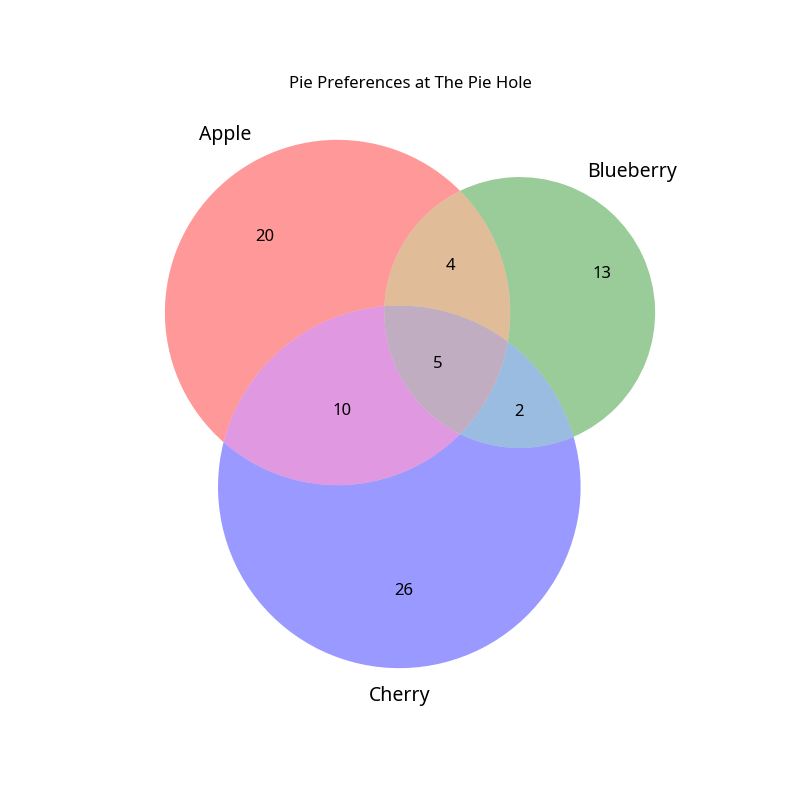

A recent survey asked patrons about their preferences for Apple, Blueberry, and Cherry pies. The results provide interesting insights into the popularity of these classic flavors.
Based on the responses, we found the following:
The breakdown of preferences is visualized in the Venn diagram below.

The diagram shows the number of people who enjoyed each combination of pies: